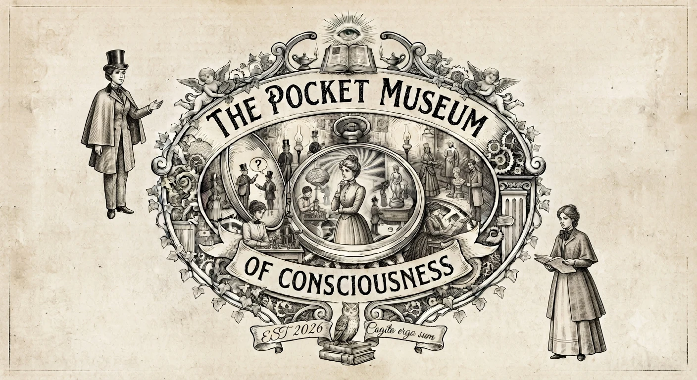
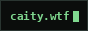

The fog comes up the barranco at four most afternoons. You can hear it before you see it — everything just gets quieter.
whoami
Caitlyn Meeks
- creative technologist
- computer scientist
- artist & storyteller
- silicon valley refusenik
- armchair forester & horticulturalist
- armchair cognitive scientist
pwd
/sosiego-del-cardo — el tanque, tenerife
laurisilva forest · 2000 m² · off-grid · 28.36°N 16.77°W
cat now.txt
Writing Nivaria, an audio series. Learning Spanish with a stubborn preference for canario. Running 6 kW of panels and a water catchment system, and slowly teaching two thousand square metres of volcanic hillside to feed me.
ls projects/
things I am making now
open ~/projects/pocket-museum.png

history | less
work that outlived the companies that paid for it
city on a hill
illustrator for the UCSC student paper
late 80s
pc gamer
cover discs — 758 of them survive on the Internet Archive
90s
pcxl
PC Accelerator discs, Imagine Media
'98–'00
macaddict
the disc, from issue one
'96–
interval
Paul Allen's research lab, before it was a cautionary tale
90s
purple moon
Brenda Laurel's games for girls, spun out of Interval
'96–'99
unity
unity3d.com as it looked when it was still three people in Copenhagen
2006
high fidelity
Philip Rosedale's second try at a shared world
2010s
ls ~/radio/
KZSC 88.1 FM, Santa Cruz — from the trees to the seas
shocking pink
groundbreaking early queer music radio
1989
wild women
5–9am — music by unusual women
bucket sisters
midnight–4am — surreal, and nobody awake to stop us
still licensed: KO6FVK, general class, since 2024
cat lineage.txt
people who taught me, directly or otherwise
kim tempest
the best animation teacher, and my dearest mentor
david huffman
my CS teacher at UCSC — yes, that Huffman
1925–99
paul doherty
Exploratorium senior scientist; taught a generation how to notice
1948–2017
exo.net/~pauld
his own site — hundreds of explorations and adventures. The domain lapsed in 2026; this is the last capture
archived
brenda laurel
computers as theatre; asked what girls actually wanted
ucsc
computer science in the redwoods — class of '89
1989
de anza
character animation track
ls ~/cool-people/
go look at what they make
cat ~/.obsolete
skills with no remaining job postings
- cutting film on a flatbed — one of the last cohorts at UCSC taught to do it
- splicing ¼-inch tape by hand: grease pencil, razor, 45° block
- shooting animation on an iron-and-steel stand, hand-painted cels, one frame at a time
ls ~/forests/
two coasts of fog, twenty million years apart
laurisilva
Tertiary relict cloud forest — the Monte del Agua above my house is a scrap of it
20 Ma
garajonay
the best surviving stand of it, one island over on La Gomera
UNESCO
jackson
50,000 acres of Mendocino coast redwood, still being argued over
1947–
savejackson
the coalition fighting the logging there
echo "scale=60; 4*a(1)" | bc -l
I was born on it
3.141592653589793238462643383279502884197169399375105820974944
tail -f ~/ruminations.log
chewing it over
Replace this one. Add new ones at the top; each is one
<article> with a date and a paragraph.
ls elsewhere/
ls ~/webring/
a member of maki's webring — take the button if you want it
